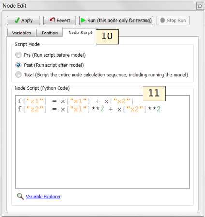

ALAMO¶
This tutorial focuses on the use of the ALAMO tool for building algebraic surrogate models. ALAMO builds simplified algebraic models, which are particularly well suited for rigorous equation oriented optimization. To keep the execution of this tutorial fast, a toy problem is used. In this case study the flowsheet calculations and sample generation are done within FOQUS, alternatively, the user can provide a simulation model such as: Excel, Aspen plus, Aspen custom modeler, etc.
Note: Before starting this tutorial the ALAMO product must be downloaded from the products page on the CCSI website. The path for the ALAMO executable file must be set in FOQUS settings (see Section [section.settings]).
Flowsheet Setup¶
- Open FOQUS.
- Name the session “Surrogate_Tutorial_1” (Figure [fig.tut.sur.session]).
Session Set Up
- Navigate to the Flowsheet Editor (Figure [fig.tut.sur.flowsheet]).
- Add a Flowsheet Node named “eq.”
- Display the Node Editor by clicking the Node Editor toggle button.
Flowsheet Setup
The Node Editor displays (Figure [fig.tut.sur.nodeEdit.Input]). The first step to setting up the node for this problem is to add input and output variables to the node.
- If the input variables table is not displayed as shown in Figure [fig.tut.sur.nodeEdit.Input], click the Variables tab and then click the Input Variables toolbox section.
- Add the variables “x1” and “x2” by clicking the Add icon (+) above the input table.
- Edit the Min/Max value for both variables to be “-10.0” and “10.0.”
- Add two output variables “z1” and “z2.”
Node Variables
To keep the execution time short, the node will not be assigned to a simulation model and calculations are performed directly in FOQUS.
Click on the Node Script tab in the Node Editor to enter the test equation (this step replaces the use of a simulator).
Enter the following equations (Figure [fig.tut.sur.nodeEdit.eq]):
f["z1"] = x["x1"] + x["x2"] f["z2"] = x["x1"]**2 + x["x2"]**2
The node script calculations are written in Python. The dictionary “f” stores output values while the dictionary “x” stores input values.
Node Script
Test the model by running the flowsheet with the value “2” for “x1” and “x2.” After running, the output variables should have the values “4.0” for “z1” and “8.0” for “z2.”
Creating Initial Samples¶
There are two ways to start an ALAMO run: (1) generate a set of initial data, (2) use ALAMO’s adaptive sampling with no initial data and let ALAMO generates its own samples. Adaptive sampling can be used with initial data to generate more points if needed. In this case, initial data is provided and adaptive sampling is used.
- Select the UQ tool by clicking on the Uncertainty button on the Home window (Figure [fig.tut.sur.new.uq.ens]).
- Click the Add New button.
- The Add New Ensemble - Model Selection dialog will appear. Click OK to set up the sampling scheme.
Add a New Sample Ensemble
- The sample ensemble setup dialog displays (Figure [fig.tut.sur.new.uq.sample1]). Select Choose sampling scheme.
- Click the All Variable button.
- Select the Sampling scheme tab.
Sample Distributions
- The Sampling scheme dialog should display (Figure [fig.tut.sur.new.uq.sample2]). Select “Latin Hypercube” from the list.
- Set the # of samples to “10.”
- Click Generate Samples.
- Click Done.
Sample Methods
- Once the samples have been generated a new sample ensemble displays in the UQ tool window (Figure [fig.tut.sur.new.uq.sample3]). Click Launch to run and generate the samples.
Run Samples
Data Selection¶
Initial and validation data can be specified by creating filters that specify subsets of flowsheet data. In this tutorial only initial data will be used. A filter must be created to separate the results of the single test run from the UQ samples.
- Click on the Surrogates button from the Home window. The surrogate tool displays [fig.tut.sur.data].
- Select “ALAMO” from the Tool drop-down list.
- Click Edit Filters in the Flowsheet Results section to create a filter.
Surrogate Data
- Figure [fig.tut.sur.dataFilter] displays the Data Filter Editor.
- Add the filter for initial data.
- Click New Filter, and enter “Initial” as the filter name.
- Click Add Rule.
- In the “Term 1” column enter: set (no quotes).
- In the “Term 2” column enter: “UQ_Ensemble” (with quotes).
- In the “Operator” column select “=.”
- Click Done.
Data Filter Dialog
Variable Selection¶
In this section, input and output variables need to be selected. Generally, any input variables that vary in the data set should be selected. However, in some cases, variables may be found to have no, or very little, effect on the outputs. Only the output variables of interest need to be selected. Note: Each output is independent from each other and for the model building, selecting one output is the same as selecting more.
- Select the Variables tab (Figure [fig.tut.sur.vaiables]).
- Select the checkbox for both input variables.
- Select the checkbox for both output variables.
Variable Selection
Method Settings¶
The most important feature to generate “good” algebraic models is to configure the settings accordingly to the problem to be solved. Each setting has a good description in FOQUS. The JSON parser is used to read method settings values. Strings must be contained in quotes. Lists have the following format: [element 1, element 2].
- Click on the Method Settings tab (see Figure [fig.alamo.method.settigs]).
- Set the FOQUS Model (for UQ) to “ALAMO_tutorial_UQ.py.”
- Set the FOQUS Model (for Flowsheet) to “ALAMO_tutorial_FS.py”
- Set Initial Data Filter to “Initial.”
- Set SAMPLER to select the adaptive sampling method: “None” “Random” or “SNOBFIT.” Use “None” in this tutorial.
- Set MONOMIALPOWER to select the single variable term powers to [1,2,3].
- Set MULTI2POWER to select the two variable term powers to [1].
- Select functions to be considered as basis functions (EXPFCNS, LOGFCNS, SINFCNS, COSFCNS).
- Leave the rest of settings as default (see Table [tutorial.alamo.table]).
- Save this FOQUS session for use in the ACOSSO and BSS-ANOVA tutorials.
ALAMO Method Settings
Execution¶
- Click the Run icon at the top of the window.
- The ALAMO Execution tab starts displaying execution file path,
sub-directories, input files, and output files.
- ALAMO version.
- License Information.
- Step 0 displays the data set to be used by ALAMO.
- Step 1 displays the modeler used by ALAMO to generate the algebraic model.
- Once the surrogate model has finished, the equations are displayed in the execution window. It may be necessary to scroll up a little. The result is shown in Figure [fig.alamo.res].
- Finally, the statistics display the quality metrics of the models generated.
ALAMO Execution
Results¶
The results are exported as a PSUADE driver file that can be used perform UQ analysis of the models, and a FOQUS Python plugin model that allows it to be used in a FOQUS flowsheet. The equations can also be viewed in the results section.
See tutorial Section [tutorial.surrogate.uq] and [tutorial.surrogate.fs] for information about analyzing the model with the UQ tools or running the model on the flowsheet.
As mentioned in section 1.5 the method settings are very important. A brief description and hints are included in Table [tutorial.alamo.table].
| Method Settings | Description |
| Initial Data Filter | Filter to be applied to the initial data set. Data filters help the user to generate models based on specific data for each variable. |
| Validation Data filter | Data set used to compute model errors at the validation phase. The number of data points in a preexisting validation data set can be specified by the user. |
| SAMPLER | Adaptative sampling method to be used. Options: “None”, “Random” and “SNOBFIT”. Adaptive sampling method to be used by ALAMO when more sampling points are needed by the model. If Random is used a simulator must be provided by the user. If SNOBFIT is used a simulator must be provided by the user and MATLAB must be installed. |
| MAXTIME | Maximum execution time in seconds. This time includes all the steps on the algorithm, if simulations are needed they run in this time. |
| MINPOINTS | Convergence is assessed only if the simulator is able to compute the output variables for at least MINPOINTS of the data set. A reduced number of MINPOINTS may reduce the computational time to get a model, but also reduces the accuracy of the model. MINPOINTS must be a positive integer. |
| PRESET | Value to be used if the simulator fails. This value must be carefully chosen to be an otherwise not realizable value for the output variables. |
| MONOMIALPOWERS | Vector of monomial powers to be considered as basis functions, use empty vector for none []. Exponential terms allowed in the algebraic model. i.e., if selecting [1,2] the model considers x1 and x1**2 as basis functions. |
| MULTI2POWER | Vector of pairwise combination of powers to be considered as basis functions. Pairwise combination of powers allowed in the algebraic model. i.e., [1,2] allows terms like x1*x2 in the algebraic model. |
| MULTI3POWER | Vector of three variables combinations of powers to be considered as basis functions. |
| Use or not of exp, log, sin, and cos functions as basis functions in the model. | |
| RATIOPOWER | Vector of ratio combinations of powers to be considered in the basis functions. Ratio combinations of powers are [empty as default]. |
| Radial Basis Functions | Radial basis functions centered around the data set provided by the user. These functions are Gaussian and are deactivated if their textual representation requires more than 128 characters (in the case of too many input variables and/or datapoints). |
| RBF parameter | Constant penalty used in the Gaussian radial basis functions. |
| Modeler | Fitness metric to be used for model building. Options: BIC (Bayesian Information Criterion), Mallow’s Cp, AICc (Corrected Akaike’s Information Criterio), HQC (Hannan-Quinn Information Criterion), MSE (Mean Square Error), and Convex Penalty. |
| ConvPen | Convex penalty term. Used if Convex Penalty is selected. |
| Regularizer | Regularization method is used to reduce the number of potential basis functions before the optimization. |
| Tolrelmetric | Convergence tolerance for the chosen fitness metric is needed to terminate the algorithm. |
| ScaleZ | If used, the variables are scaled prior to the optimization problem is solved. The problem is solved using a mathematical programming solver. Usually, scaling the variables may help the optimization procedure. |
| GAMS | GAMS is the software used to solve the optimization problems. The executable path is expected or the user must declare GAMS.exe in the environment path. |
| GAMS Solver | Solver to be used by GAMS to solve the optimization problems. Mixed integer quadratic programming solver is expected like BARON (other solvers can be used). |
| MIPOPTCR | Relative convergence tolerance for the optimization problems solved in GAMS. The optimization problem is solved when the optcr is reached. 5 to 1 % is expected (0.005 to 0.001). |
| MIPOPTCA | Absolute convergence tolerance for mixed-integer optimization problems. This must be a nonnegative scalar. |
| Linear error | If true, a linear objective function is used when solving the mixed integer optimization problems; otherwise, a quadratic objective function is used. |
| Specify whether constraint regression is used or not, if true bounds on output variables are enforced. | |
| CRNCUSTOM | If true, Custom constraints are entered in the Variable tab. |
| CRNINITIAL | Number of random bounding points at which constraints are sampled initially (must be a nonnegative integer). |
| CRNMAXITER | Maximum allowed constrained regressions iterations. Constraints are enforced on additional points during each iteration (must be positive integer). |
| CRNVIOL | Number of bounding points added per round per bound in each iteration (must be positive integer). |
| CRNTRIALS | Number of random trial bounding points per round of constrained regression (must be a positive integer). |
| CUSTOMBAS | A list of user-supplied custom basis functions can be provided by the user. The parser is not case sensitive and allows for any Fortran functional expression in terms of the XLABELS (symbol ^ may be used to denote power). |